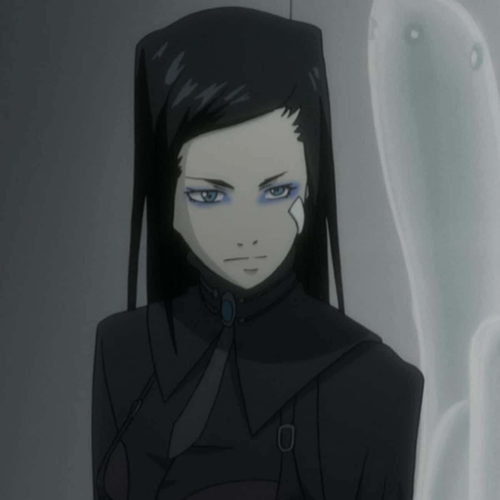
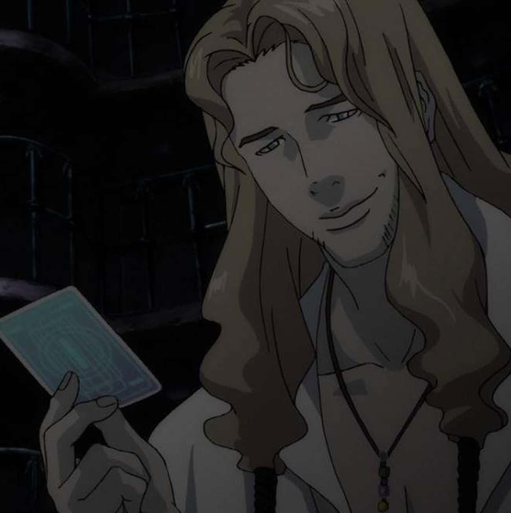

Ergo Proxy is the proxy form of Vincent Law; he is the proxy of death from his reference
to himself as quote "I am Vincent Law, the Agent of Death." Proxy One begat Ergo Proxy from a part of
himself. That is why he refers to Vincent as his shadow.

Re-L Mayer is the female titular protagonist of Ergo Proxy.
As an investigator for the Intelligence Bureau in Romdo, she is attacked by two monsters and drawn into the mystery of the Proxies.
She eventually joins Vincent Law and Pino on their quest for answers.
Pino is one of the main characters of Ergo Proxy. A high-end Companion-type AutoReiv, she originally belonged to Raul Creed
and his wife. After becoming infected by the Cogito Virus, Pino joined Vincent Law and became his companion on their journey.

Kazkis Hauer was the proxy of Asura.
Kazkis became
furious when he discovered Vincent had no memories, subsequently attacking him to provoke the proxy to emerge. When it did,
Kazkis was overpowered and killed, an end he gladly welcomed.